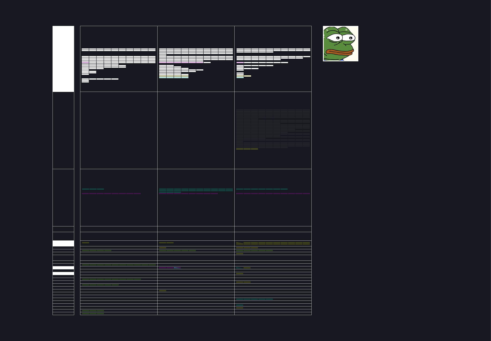
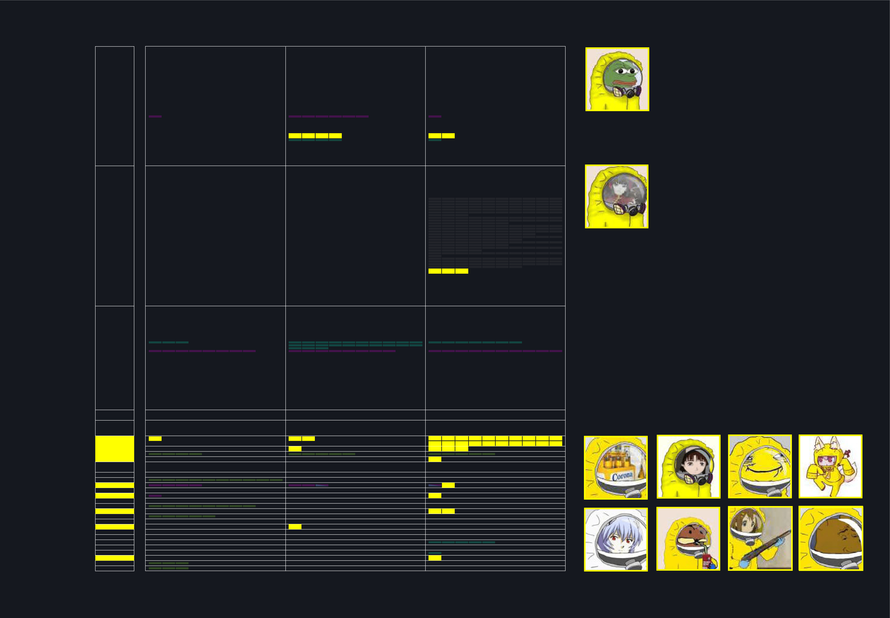
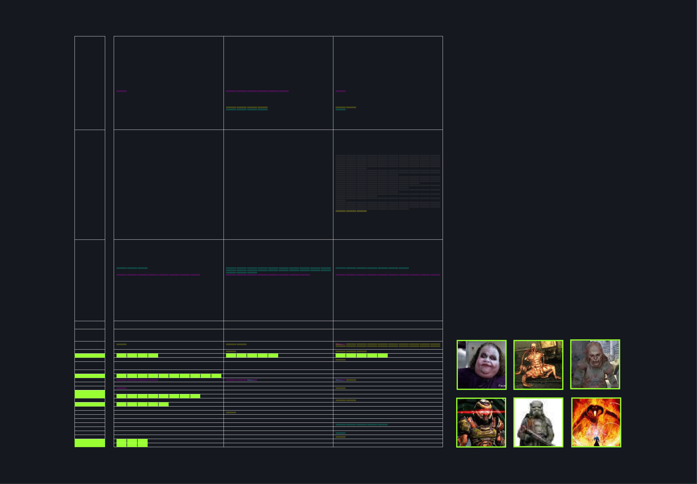

Since the beginning of the Covid-19 pandemic a lot of conspiracy theorists have been trying to point out some possible causes. Some of the main assumptions involve the advent of 5G, the spreading of GMOs or a plan to vaccinate the world population. Most of these topics are widely discussed on 4chan and often expressed using pictures and reinterpretations of fictional characters. This is a classification of the most recurrent ones from August to November 2020.
In the conspiracy theories analyzed we can see how Pepe the frog is the most used character in conversations on 4chan with 292 appearances.
Different characters are enhanced with the symbolic hat of Trump's campaign “Make America Great Again”.
Some characters, especially “Wojak” are often represented with masks, a notable entry is “Cure chan”, the personification of the battle against Covid. This phenomenon is more evident on GMO and VAX related threads.
The “Hazmat suit” is a recurrent element and is combined both with fictional characters and real political and cultural figures especially on GMO and VAX threads.
On the 5G thread there is a dominance of characters from horror, dystopian and sci-fi video games and movies that is almost absent in the other threads.
